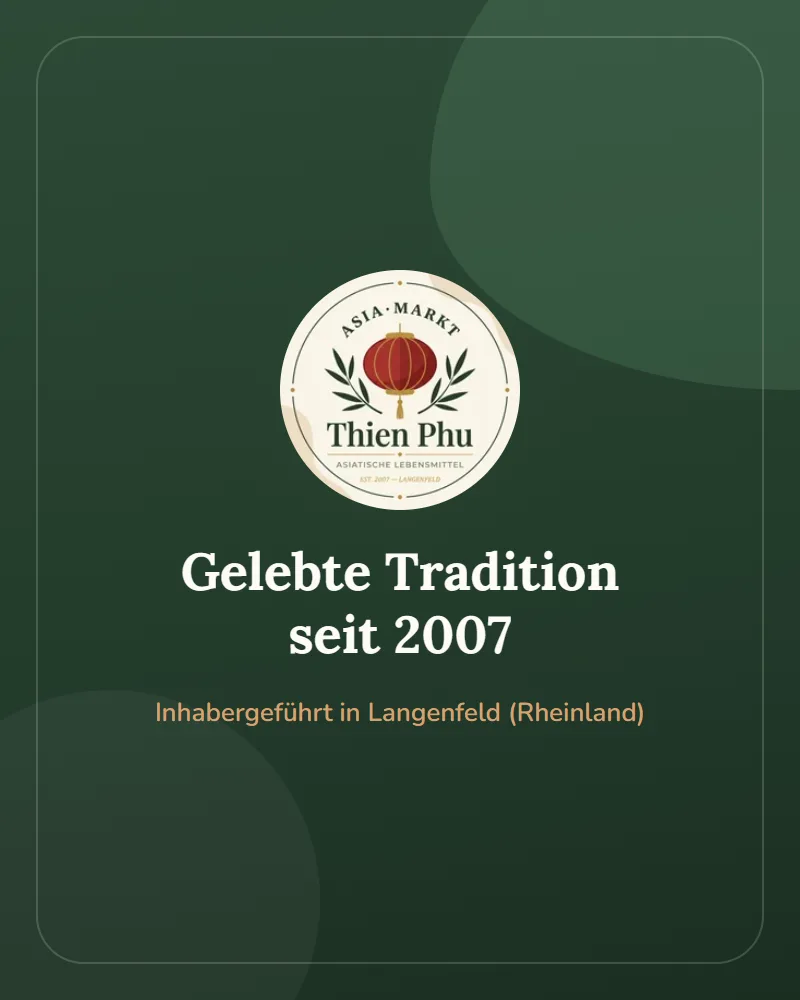

Tradition
Ihr lokaler Ansprechpartner
Aus Liebe zur asiatischen Esskultur
Im Asia Markt Thien Phu dreht sich alles um den guten Geschmack. Als inhabergeführter Lebensmittelmarkt in Langenfeld (Rheinland) wählen wir die Produkte in unseren Regalen mit Sorgfalt und Fachkenntnis aus.
Unsere Motivation: Wir möchten Ihnen die Vielfalt der fernöstlichen Küchen zugänglich machen – von der vietnamesischen Pho über das thailändische Curry bis hin zum japanischen Ramen. Deshalb führen wir bekannte asiatische Marken und Zutaten, die auch in Asien fester Bestandteil der alltäglichen Esskultur sind.
Regelmäßige Frischlieferungen garantieren, dass Sie bei uns stets qualitativ hochwertiges Gemüse und frische Kräuter für Ihre Lieblingsrezepte finden.
Seit 2007
In Langenfeld
Ganz Asien
Aus vielen Ländern & Regionen
Reichhaltig
Für jede asiatische Küche
Überzeugen Sie sich vor Ort
Hauptstraße 74, Langenfeld · Parken direkt gegenüber (15 Min gratis) · Karte & Bargeld
Mo–Fr 9–18 Uhr · Sa 9–14 Uhr · So geschlossen